iBioSim has been developed for the modeling, analysis, and design of genetic circuits. While iBioSim primarily targets models of genetic circuits, models representing metabolic networks, cell-signaling pathways, and other biological and chemical systems can also be analyzed. iBioSim includes the following components:
Model Editor - a tool to create a model of a genetic circuit or other biological system.
Analysis Tool - an abstraction-based ODE, Monte Carlo, and Markov analysis tool.
Learn Tool - a tool to learn a model from time series data (TSD).
TSD Graph Editor- a tool to visualize TSD files.
Histogram Graph Editor - a tool to visualize probability data.
This tutorial illustrates each of these features of iBioSim using a simple model for the cI and cII genes and the PR and PRE promoters from the phage λ decision circuit.
Within iBioSim, all files are collected within projects. A project is a collection of models, analysis views, learn views, and graphs. As shown below, iBioSim displays all project files on the left, the open models, views, and graphs on the right, and a log of all external commands on the bottom. The menu bar is located on the top of the window in the Windows and Linux versions. It is located on the top of the screen in the MacOS version.
To create a new project, select New → Project from the File menu as shown below. You will then be prompted to browse to a desired location and to give a name to the project directory. Enter the name SysBioTutorial. After you do this, click the new button and a new project directory will be created.
After you have created a project, you can create a new model to add to the project by selecting New → Model from the File menu as shown below. You will then be prompted to enter a model ID. Enter lambda. At this point, a Model editor will open in a new tab.
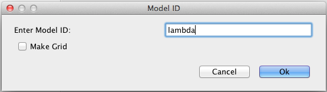
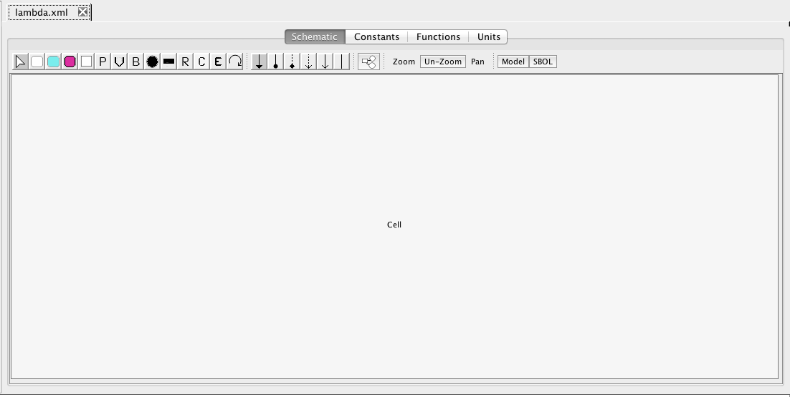
Compartments are the membrane-enclosed regions where species can be found and reactions take place. iBioSim creates a default compartment initially with the ID of Cell. If you click on the schematic within the Cell compartment, it brings up the compartment editor. Uncheck the "Is Mapped to a Port". This indicates that this compartment should be enclosing this model and not replaced when instantiated in a larger model. Once you press OK, you will notice that the compartment now has rounded corners to indicate that this is membrane enclosed by the compartment Cell.
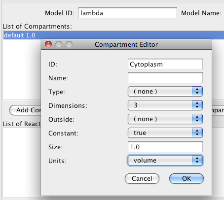
To add a chemical species, select the Add Species icon and click on the schematic canvas. This will drop a new species with default ID and other values. You may change these defaults by clicking on the selection icon
, and
double-clicking on the species to open the Species Editor. In this case, let us change the ID to CI, and click on degrades checkbox. We will leave all other values at their default values. One thing that is important to note is that when this model is analyzed a default degradation reaction will be created which has a rate of 0.0075.
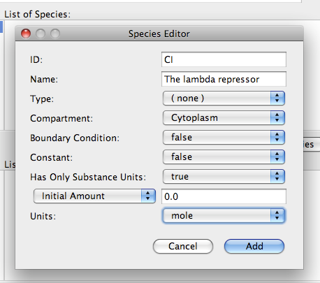
Add another species for the CI dimer molecule. The next step is to add a complex-formation reaction to convert CI monomers into CI dimers. Select the complex formation icon , highlight the CI species, and, while holding the mouse button, stretch the complex formation arc to the S1 species. Next, edit this species to set its ID to CI2 and select that it degrades. This species is created using a complex-formation reaction with an equilibrium constant of 0.1. Change default to custom for the complex formation equilibrium and set it to this value as shown below.
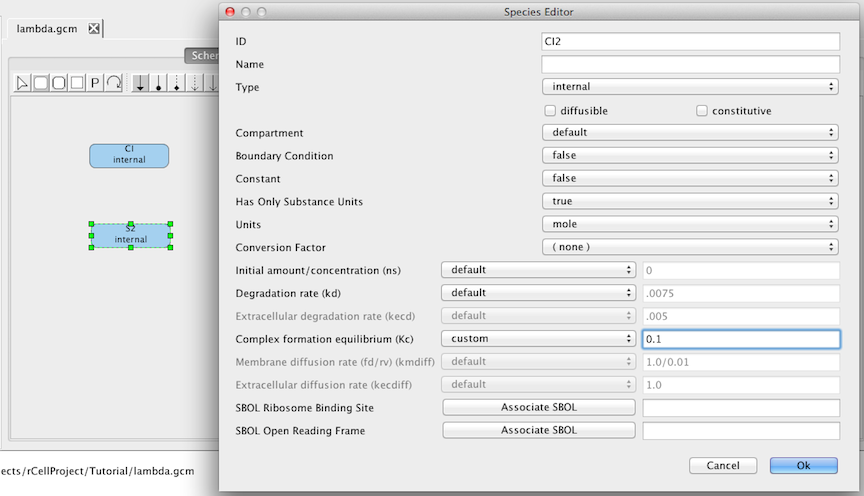
If you double-click on the complex formation arc, an influence editor will open which indicates that this is a complex formation arc and the stoichiometry of binding (i.e., the number of molecules of the source species used to construct the sink species) is 2. The default in this case is correct as it does take two molecules of CI to make CI2.
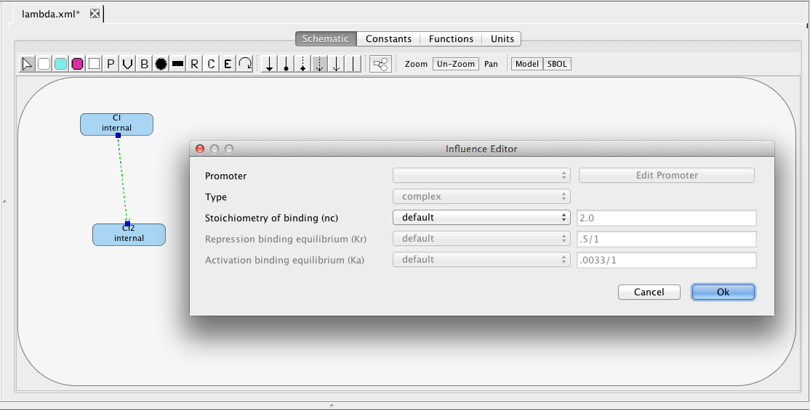
Next, let's add the PR promoter, which initiates transcription of the gene that produces the protein CII. To do this, select the promoter icon and click on the schematic canvas to drop the promoter with a default ID and parameter values. Double-click on the promoter to bring up the promoter editor. Change the ID to PR, customize the RNAP binding equilibrium to be 0.69422, and set the open complex production rate to be 0.014.
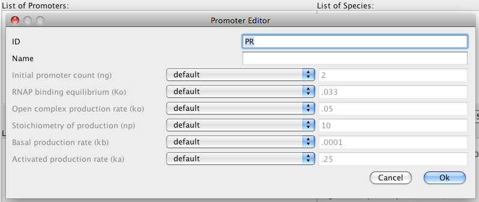
The PR promoter is repressed by the CI2 species. To create this relationship, select the repression arc icon
, highlight the CI2 species, and, while holding the mouse button, stretch the repression arc to the PR promoter. Next, double-click on the repression arc to bring up the influence editor. In this editor, customize the stoichiometry of binding to 1, indicating that just one CI dimer is necessary to repress this promoter, and change the repression binding equilibrium to 0.2165.
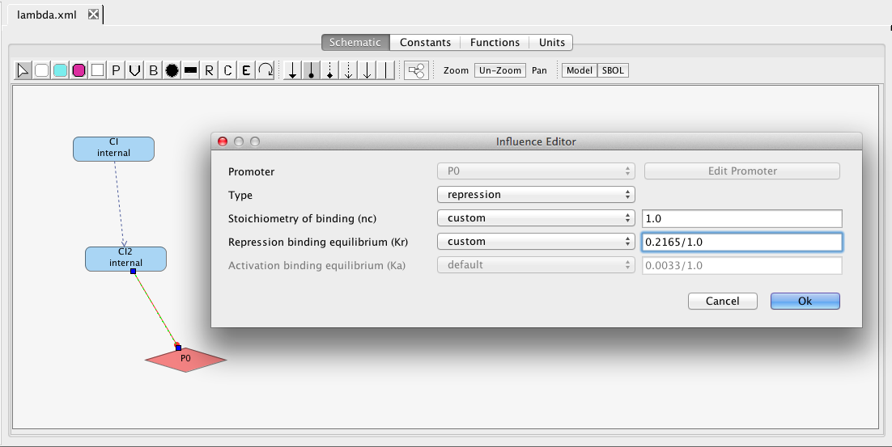
As mentioned earlier, the PR promoter initiates the production of the CII species. Add the CII species following the steps given earlier for adding a species (be sure to mark that it degrades). Then, highlight the PR promoter and, while holding the mouse button, stretch the production arc to the CII species. Note that the icons selected for this are not important because all arcs from promoters to species are always production arcs.
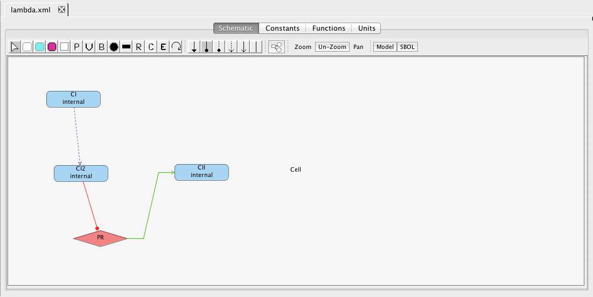
Finally, CII species activates the production of the CI species from the PRE promoter. Promoters do not need to always be drawn. They can also be implicit on an influence. To add an activation arc with an implicit promoter, select the activation arc icon , highlight the CII species, and, while holding the mouse button, stretch the activation arc to the CI species. This creates not only the influence but also a default promoter. Double-click on the activation arc to bring up the influence editor. In this editor, customize the stoichiometry of binding to 1, indicating that just one CII molecule is necessary to activate this promoter, and change the activation binding equilibrium to 0.00161. Finally, click on the Edit Promoter button and change the ID of this promoter to PRE. Also, customize the RNAP binding equilibrium to be 0.01, the basal production rate to be 0.00004, and the activated production rate to be 0.015.
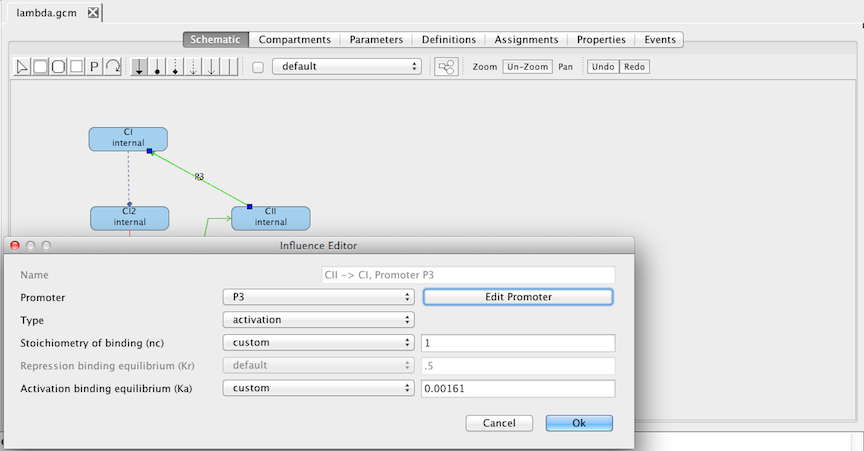
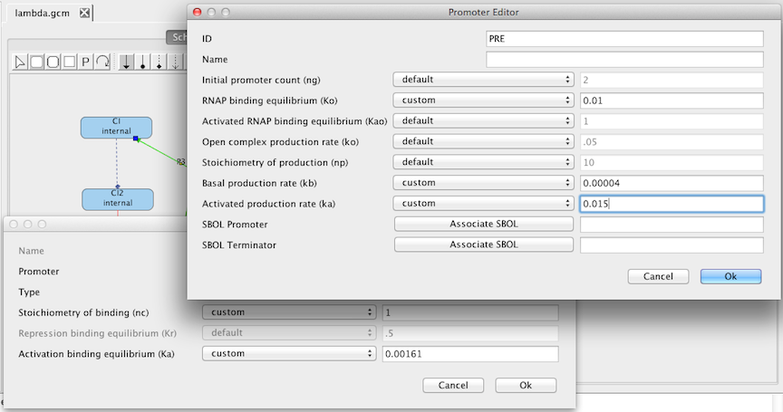
Next, let's go look at some of the other model tabs. Click on the Functions tab. Here one can add/remove/edit definitions for functions. Click on Add Function, and let's create a function to compute the total number of molecules where x is the number of monomers and y is the number of dimers. Let's give this function an ID of total with arguments x and y, and a definition of x + 2 * y.
Click on the Units tab. Unit definitions allow the user to create custom units for use in models. As an example, click Add Unit and enter the ID nanoMole. A unit is defined using pre-defined base units. Click on Add to List and find mole in the Kind combo box, and change the scale to −9 to define a nanoMole in terms of moles. The exponent and multiplier are real numbers, and the scale is an integer that specifies the relationship between the derived unit and the base unit using the relation below:
unit
=
(multiplier * 10scale * baseUnit)exponent
Follow the same steps to create a unit for microLitre.
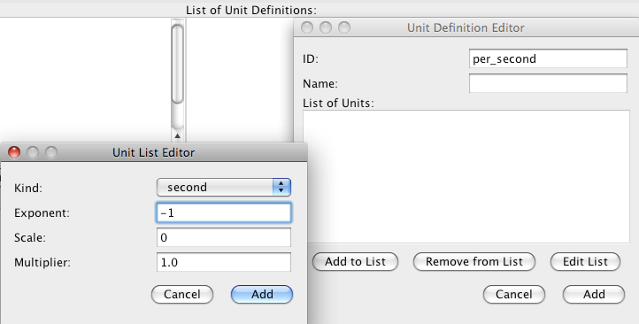
Next, click on the Schematic tab. Then, click on the Model button to bring up a window of default units for this model. These are the units to be used for various things when no units are provided. For this model, let's make the Substance Units be in nanoMoles, Time Units be in seconds, and Volume Units be in microLitres. The Extent Units indicate the units of change for reactions. Let's make that also be nanoMoles.
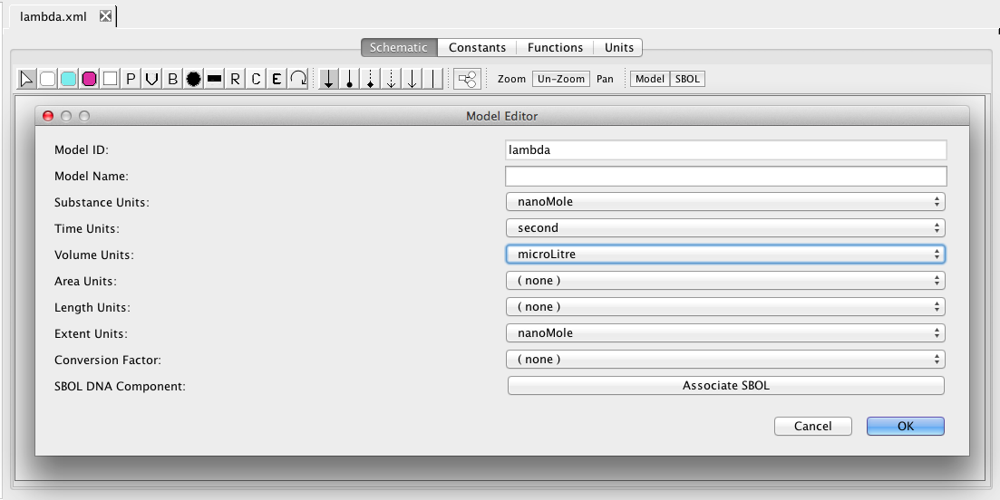
Next, click on the Constants tab. This tab includes the default model generation parameters as well as additional global variables. The model generation parameters are used for default values when creating a reaction-based model from our higher level model. These parameters can be edited by selecting them and entering a new initial value. They should not be removed. Note that new global constants can also be added by the user, if desired.
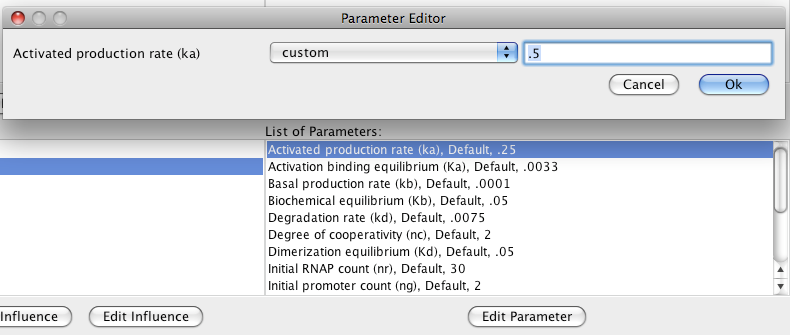
While you can add a global variable here, the preferred way is to add it on the schematic. Click on the Schematic tab. Select the add variable icon , and click a location to add the variable to the schematic. Then, click on the selection icon
, and double click on the variable to open the Parameter Editor. Change the ID to CI_total, for the total amount of the species CI in both monomer and dimer form. Its units are in nanoMole and it is not constant.
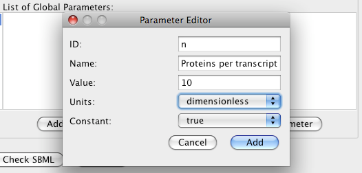
Now, let's create a rule to compute the value of CI_total. There are three types of rules: algebraic, assignment, and rate. Algebraic rules are used to specify relationships that must be maintained. Assignment rules are used to define one variable in terms of a mathematical expression. Finally, rate rules are used to indicate a differential equation to govern the evolution of a variable in terms of a mathematical expression on other variables. To add a rule, select the add rule icon
. In the Rule editor,
select Assignment, select the variable CI_total, and enter the expression total(CI,CI2). This uses our new function to compute that the amount of CI in total is the number of monomer molecules plus two times the number of dimer molecules.
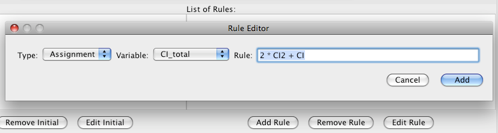
Next, let's add a constraint. A constraint is a condition that must be satisfied or simulation should terminate. To add a constraint, select the add constraint icon
. Add a constraint that states that CI remains less than or equal to 20 molecules as shown below. Add a second constraint that states that CII remains less than or equal to 50 molecules.
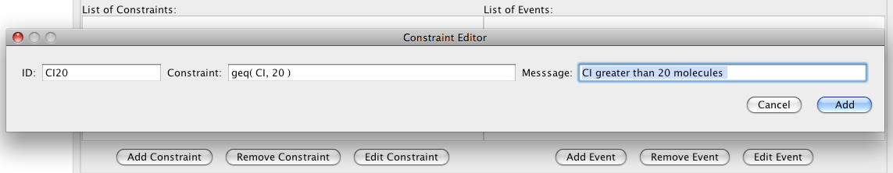
Finally, let's add an event. Events are used to specify discrete state changes. For example, let's describe an event for cell division. Click on the Add Event button, enter the ID CellDivision, trigger true, and delay of 2100. The trigger specifies the condition that should be satisfied to enable this event. In this case, we want it to be enabled initially. The delay indicates the time after which it is enabled that it should execute. This combination results in a cell division event at 2100 seconds after simulation begins. The event assignments specify the state change(s) for this event. Click on the Add Assignment button and select the CI variable, and enter the assignment CI / 2. In other words, the number of molecules is being divided between the two daughter cells with a random distribution. Similarly, add event assignments to divide up CI2 and CII.
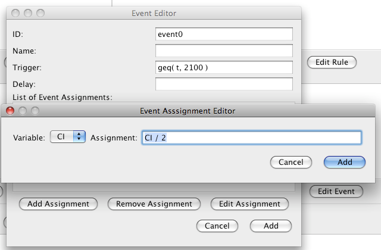
At this point, you should have a model that looks like the one below (though locations of elements may be different). Now, let's make sure the model is saved by either clicking on the Save icon or selecting the Save option from the File menu.
This section describes how to analyze the model just created using ordinary differential equation (ODE) simulation. The first step is to create an analysis view. To do this, right-click on the model file and select Create Analysis View. Enter the analysis ID lambda or just press enter. At this point, a new analysis view should open. You should also notice that an icon appears next to your model file. When you click on this, it will show you all of the analysis and learn views associated with this model.
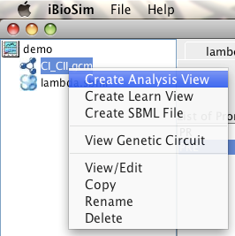
Next, click on the Schematic tab. This tab allows you to select which SBML model elements to include in your analysis, modify initial conditions, and visualize simulation results on your schematic. For now, let us remove both constraints and the event from our analysis by clicking on them to make them invisible.
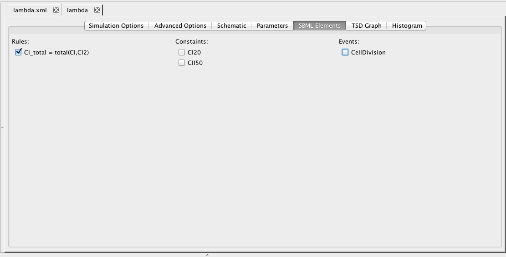
Now, go back to the simulation options tab. Make sure that the simulation type is set to ODE and the simulator selected is Runge-Kutta-Fehlberg. Change the time limit to 2100.0, change the print interval to 10.0, and enter a Simulation ID of ode. Then, either press the Save and Run icon or select the Save and Run option from the File menu.
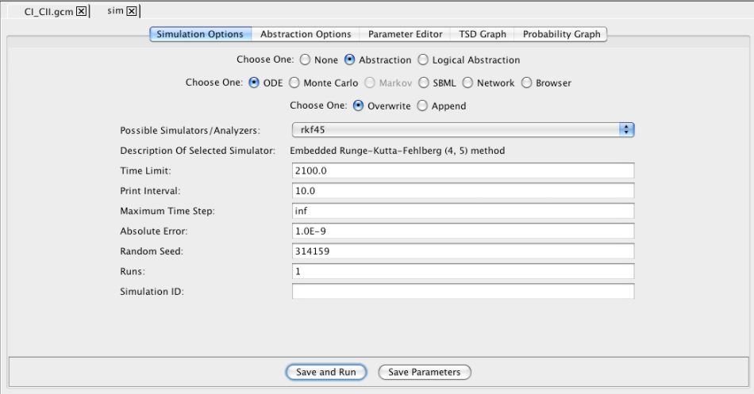
After the simulation completes, click on the TSD Graph tab. Double-click on the graph to bring up the graph editor. Open the ode simulation, highlight Average, select CI_total and CII, change the Title to "ODE Simulation Results", change the X-Axis Label to "Time (seconds)", and change the Y-Axis Label to "Number of Molecules".
Press the OK button.
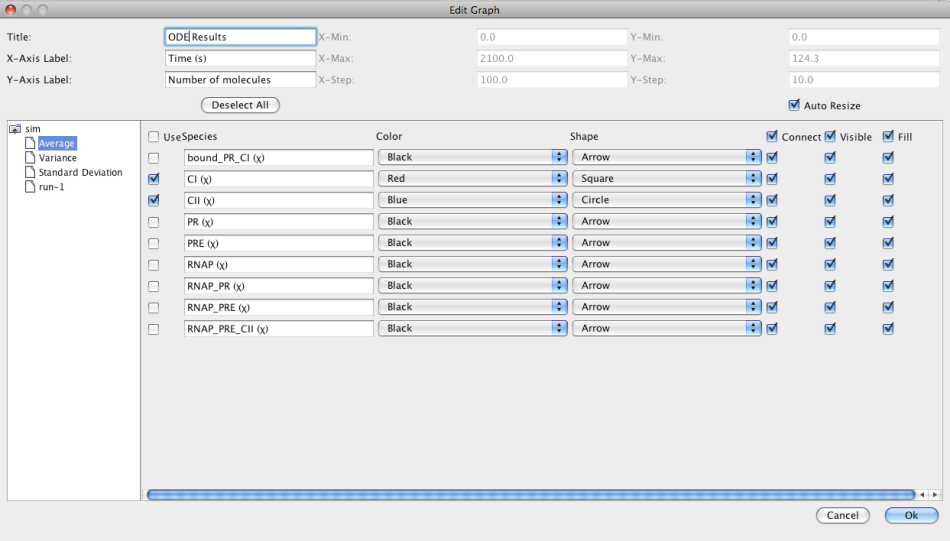
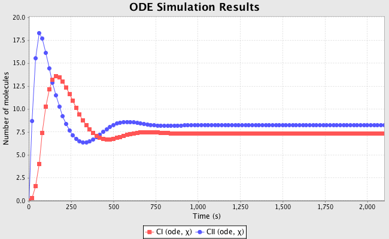
Graphs can be exported in a variety of formats including:
Time series data format (tsd).
Comma separated value (csv).
Column separated data (dat).
Encapsulated postscript (eps).
Joint Photographic Experts Group (jpg).
Portable document format (pdf).
Portable network graphics (png).
Scalable vector graphics (svg).
In order to export a graph, you can either click on the Export icon or select one of the graph export options from the File menu. When using the Export icon, the type of file exported will depend on the extension provided to the file name. Click on the Export icon, browse to a location on your file system, and enter the file name of ode.pdf to create a PDF file for your graph.
Genetic production and its regulation are modeled as a single complex reaction. If the expand reactions abstraction option is selected, the binding reactions for transcription factors are separated into their own reactions providing a more detailed model. To see the effect of this, select Expand Reactions, change the Simulation ID to ode2 and rerun the simulation. Then, go to the TSD Graph tab, and add CI_total and CII from this simulation to the graph. You should see that there is not a significant difference though the simulation time is slower due to these extra reactions. If you would like to see the actual model that is simulated in this case, you can save the reaction-based model by selecting Model as your simulation type. Then, either press the Save and Run icon or select the Save and Run option from the File menu. In this case, you must provide a new model ID. This new model will appear in your project and it can be opened in the Model Editor. Since this model does not include any layout information, you will need to either lay it out by hand or using one of the default layout routines selectable using the Apply Layout icon ,
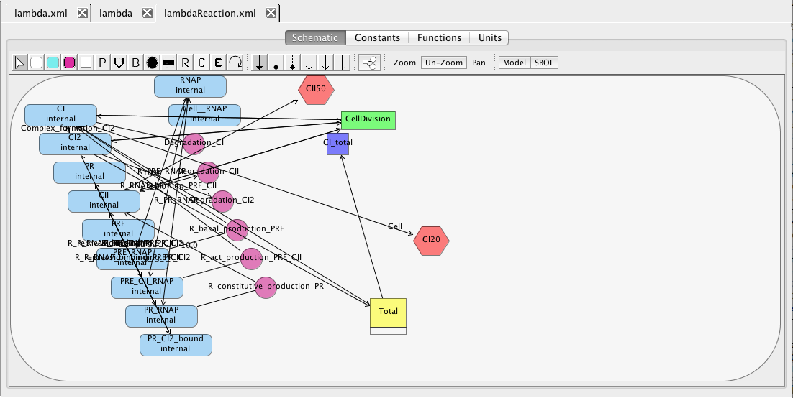
There are two additional ways to see reaction-based models. If GraphViz is installed on your computer, you can select Network for your Simulation Type to open the reaction-based model in GraphViz (the example below is when abstraction is set to none). If it does not open in GraphViz, make sure that you have files with the .dot file extension associated with GraphViz on your computer.
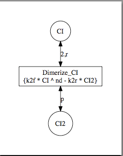
You can also view the model in a web browser by selecting Browser for your simulation type. In this case, you should ensure that you have files with the .xhtml extension associated with your favorite browser.
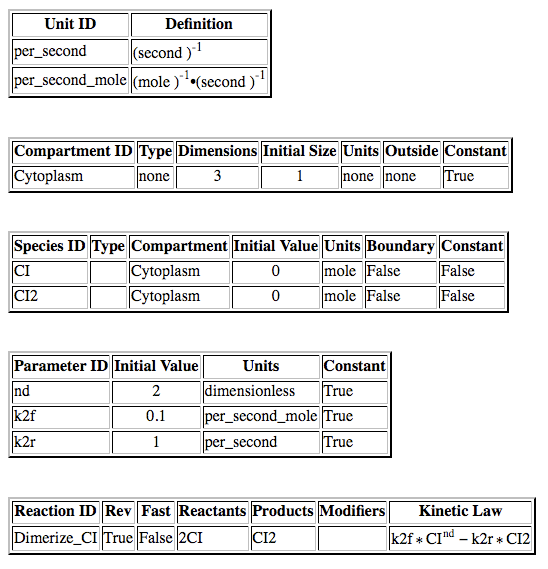
Parameters and initial amounts can be modified for a simulation. To try this, select the schematic tab, and click on CII to bring up the parameter editor. Change the degradation rate from default to modified, and change its value to 0.075. Go back to the simulation options tab, select ODE simulation, change abstraction back to none, and change the simulation id to ode3. After running simulation, add CI_total and CII from the ode3 simulation results to the graph. You should observe that the amounts have reduced significantly.
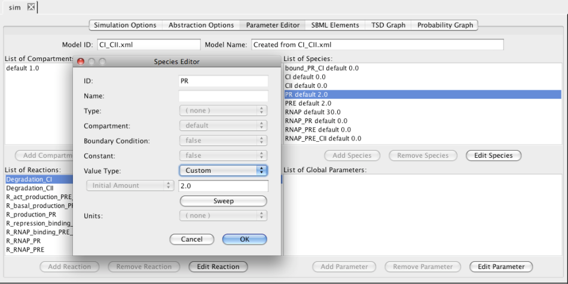
Go back to the schematic and change the degradation rate for CII back to default. Now, click on the Parameters tab. Here, click on kd to open the parameter editor for this constant. Let us sweep this parameter. Change the value type to Modified, and click on the sweep button. Enter a start value of 0.005, stop value of 0.01, and step value of 0.0025. Go back to the simulation tab, and remove the simulation id, and run the simulation. Now, go to the TSD graph tab, and edit the graph. First, press the Deselect All button to clear the selections. You should now have three new simulation folders, one for each value. Go into each and select CI_total from the average for each. This will plot the value of CI_total for each degradation rate.
This section describes how to analyze the model using stochastic, Monte Carlo, methods. First, go back to the parameter tab and change kd back to Original. Then, select the Simulation Options tab again, select Monte Carlo, change the number of runs to 100, set the simulation ID to ssa, and click on the Save and Run icon. Click on the TSD Graph tab. Double-click on the graph to bring up the graph editor. Open the ssa simulation directory, and highlight run-1. Select CI_Total and CII, change the title to "SSA Simulation Results", change the X-Axis Label to "Time (seconds)", and change the Y-Axis Label to "Number of Molecules". Press the OK button. Click on the Export icon and enter the file name ssa-1.pdf. Repeat these steps to generate graphs for the average (average.pdf) and standard deviation (stddev.pdf). Note that you can use the "Deselect All" button to remove all items from the graph.
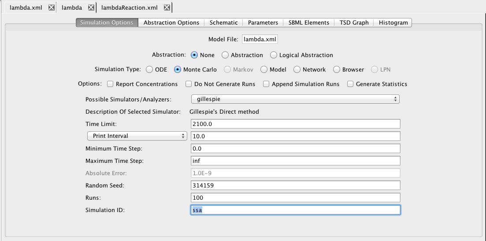
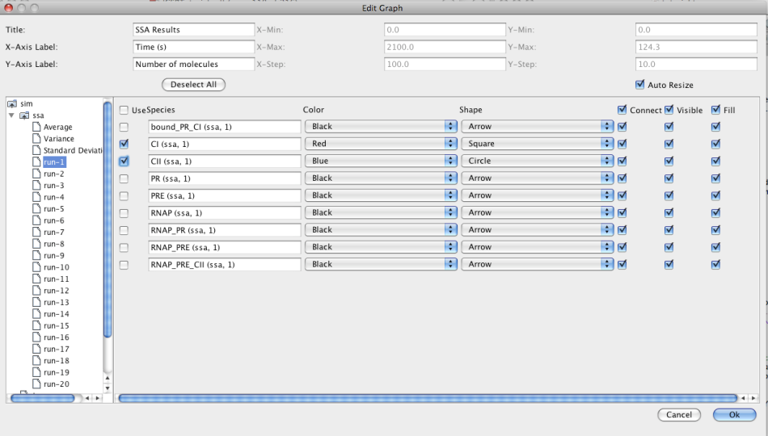
Another way to view simulation results is on the schematic. To do this, click on the schematic tab. At the bottom of the window, select the Choose Simulation button, which brings up a window with all the simulations in this analysis view. Open the ssa directory, select run-1.tsd, and press OK.
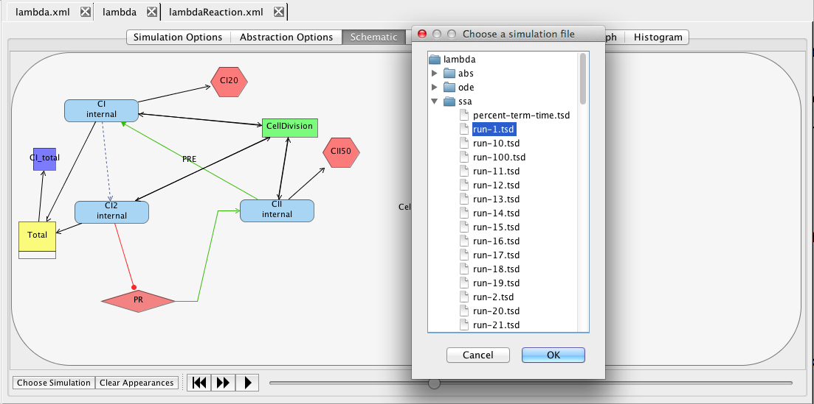
Now, click on the CI species, which brings up the Edit Species window. Select the Appearance tab. Here you can select how you want the species to appear as you playback the simulation. You can have it change color, size, and/or opacity on a gradient. You can also select the range of molecule counts to specify the ends of the gradient(s). Finally, you can indicate that these selections are either for this species or all species in the model. For our example, let's make CI follow a green color gradient, CI2 follow a red color gradient, and CII follow a blue color gradient.
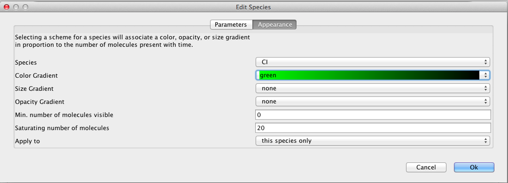
Once you have made your selections, you can now play back the simulation. You can either single-step the simulation by pressing the icon or play continuously by pressing the icon. The playback can also be paused by pressing the icon and restarted by pressing the icon.
The efficiency of simulation can be improved by employing various automatic abstraction techniques. Go back to the Schematic tab and click on the Total_CI rule to exclude it from the analysis. To activate abstraction, click on the Simulation Options tab, select Reaction-based Abstraction and change the simulation ID to abs. Press the Save and Run icon and note that the simulation time is substantially faster. Plot both the SSA results for CI_total and CII with the abstraction results for CI (note this is now equivalent to CI_total after abstraction) and CII.
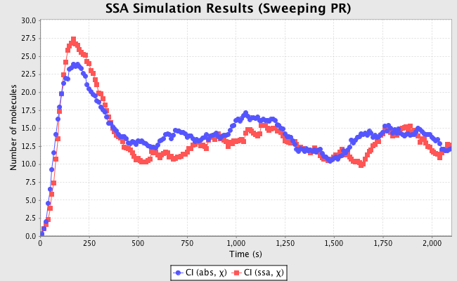
One way to understand why abstraction is so much faster is by looking at the complexity of the reaction-based model before and after abstraction. To see the difference, select the Network option, then generate the graph for None, Expand Reactions, and Reaction-based Abstraction options. The reaction-based model after abstraction is shown below which is clearly much simpler than the full model shown earlier.
Next, let's try checking some properties. To do this, go to the SBML Elements tab and check the boxes next to the constraints. Recall that these constraints terminate simulation whenever CI goes above 20 molecules or CII goes above 50 molecules. Go back to the Simulation Options tab and change abstraction back to none, the Simulation Type to Monte Carlo, and Simulation ID to prob, then press the Save and Run icon. Now, let's plot the results on a histogram by clicking on the Histogram tab and then double-clicking on the graph to bring up the histogram graph editor shown below. Open the prob folder, select the sim-rep file, and check the Use check box to get all fields.
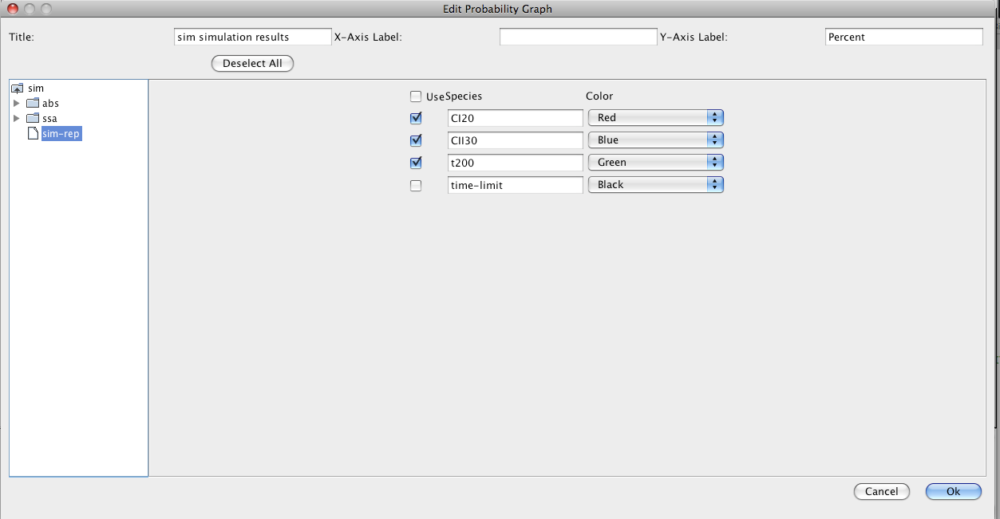
The histogram shown here indicates that CI goes above 20 molecules first about 21 percent of the time, CII goes above 50 molecules first about 74 percent of the time, and the simulation terminates before either happens about 5 percent of the time.
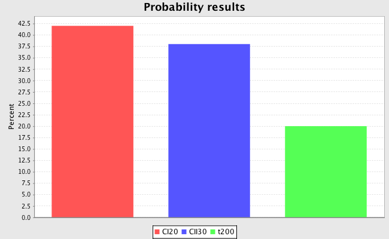
These results can also be visualized using the TSD graph tool. Click on the TSD graph tab, click on the graph, Deselect All, open the prob folder, select the Percent Termination file, and add both constraints to the graph. The result, shown below is the probability of each constraint terminating the simulation as time evolves.
This section describes how a model can be learned from time series data using iBioSim's Learn Tool. To demonstrate the Learn Tool, first create a simple model, learnModel, which just includes the two species CI and CII as shown below. This model represents any background knowledge you have about the model that you wish to learn. Any influences that you add between species will be assumed as part of the final learned model. You can also indicate definite knowledge about there not being any influence between two species by selecting the No Influence icon
and connecting the species with a no influence arc.
Now, create a learn view by right-clicking on this model file and selecting Create Learn View. Give this learn view the ID learnLambda. At this point, a new learn view should open. You should also notice that an icon appears next to your model file. When you click on this, it will show you all of the analysis and learn views associated with this model.
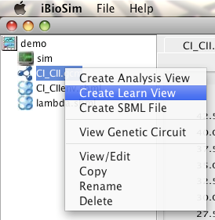
The next step is to add some experimental data from which you wish to learn a model. In this demo, we will just utilize our simulation data as synthetic experimental data. To do this, click Copy From View, and select lambda/abs. Highlight lambda/abs/run-1.tsd and you should see the simulation data for CI and CII appear on the right in the data editor.
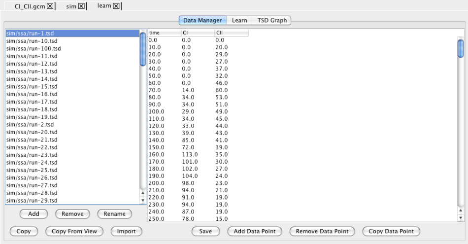
Now, click on the Learn tab. Here you can edit the various learning options. For example, you can either use auto-generated levels or user-generated levels for your data encoding. Select Use User Generated Levels, which will make the levels below editable. At this point, you can ask the tool to suggest levels by clicking on the Suggest Levels button. Finally, click on the Save and Run icon, which if successful, will ask you for a model ID for the generated model. Enter learnedModel, then open this model in the model editor which should show you the model shown below.
This section is less detailed than the others but it gives some intuition about modeling using reactions, components, and grids.
First, let's consider an alternative model of CII degradation which we are going to model using chemical reactions. To do this, create a new model named CII_degradation. In this model, create species CII, P1, and CII_P1, making CII have the input type so that we can connect to it later. Set an initial amount of 35 molecules for P1.
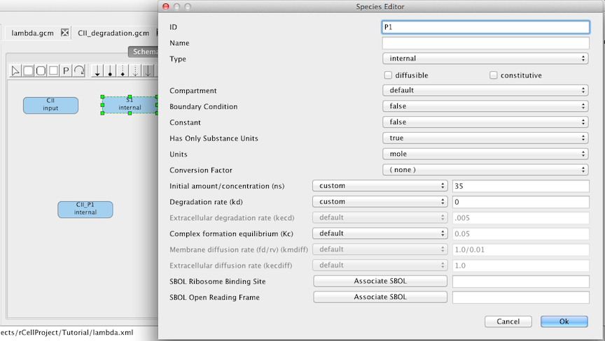
Now, select the Add Reaction icon and click on the schematic canvas to drop a reaction. This creates a reaction with a default ID and parameter values that we can change later, if we wish.
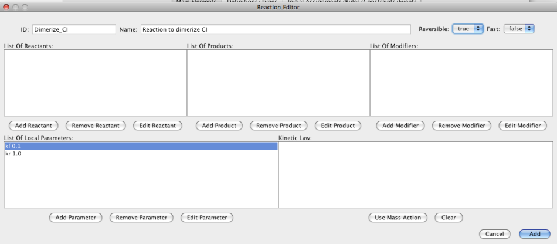
Now, let's connect up the reactant species. To do this, select the Reaction icon , select the reactant species CII, and, while holding the mouse button, drag the reaction edge to the reaction R1. Similarly, add P1 as a reactant as well. If you double-click on a reactant edge, it brings up a Reactant editor where you can change the stoichiometry, if desired.
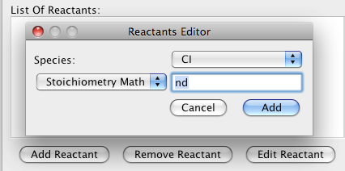
Connecting product species is accomplished in much the same way, except in this case you select reaction R1 and drag the reaction edge to the product CII_P1. Again, there is a Product editor for changing the stoichiometry. Note that modifiers (i.e., species that are neither produced nor consumed by a reaction but simply catalyze a reaction) can be added in a similar way using the Modifier icon instead.
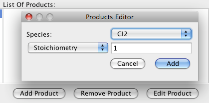
Now, let's adjust the parameters for this reaction by clicking on it to open the Reaction Editor. Press the Use Mass Action button to automatically create a kinetic law for this reaction. Then, make this reaction reversible and adjust its forward reaction rate to be 1.0.
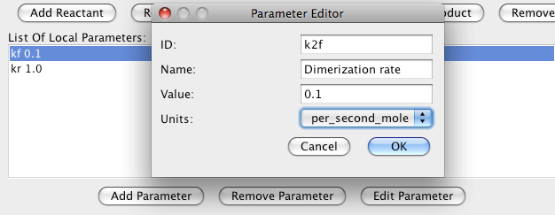
Follow the same steps to add another reaction that degrades CII in the CII_P1 form and releases the protease molecule P1. This reaction is not reversible and it should have a forward rate of 0.002.
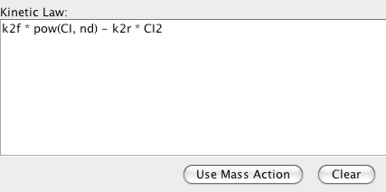
Let's now go and add this new degradation mechanism to our lambda model (you might actually want to copy your old model before you do this, which you can do by highlighting the file and selecting Edit → Copy or using the right mouse button menu). To simplify things, remove the rule, constraints, and event. Next, open the Species Editor on CII and deselect the degrades option. Finally, select the Add Component icon and click on the Schematic canvas opening the Add Component(s) window. In this window, browse the combo box to find your CII_degradation model. Pressing OK will then add it to your schematic.
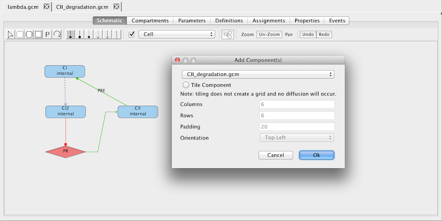
Now, let's connect CII to this new component to relate the CII within the component to the outer CII species. To do this, select the CII species and, while holding the mouse button, drag a connection to the component connecting CII to the CII port on the component.
You may want to now go and try simulating this model, if you like.
In the last example, we will build a model with a grid. First, edit the CII species and make it diffusible, and save the model. Now, create a grid model using the File → New → Grid Model menu, and name the new model Population. In the create grid window shown below, select your copy of your lambda model and change the number of rows and columns to 5.
The schematic in a grid model is a bit different. It includes a grid in which each location can be empty or contain exactly one component. Only components can be added to grids.
When you create a reaction-based model for a grid during analysis, reactions are created to move the diffusible species between the grid locations to provide a coarse form of spatial modeling. If the component within a grid location is enclosed in a compartment membrane (indicated by the rounded corners), the model generated also includes reactions to diffuse the species in and out of the compartment. In the analysis schematic, you can visualize your grid models by clicking on the component in the grid and selecting the species that you would like to see. For each such species, you can set its color, size, and/or opacity gradient. You can also copy these settings to all like models in your grid. Finally, you can click on the area outside of the component within the grid to allow you to also visualize the species that are in the medium.
A more detailed
grid tutorial
is available in the docs directory that comes with the distribution.
File translated from
TEX
by
TTH,
version 3.81. On 11 Sep 2017, 09:31.